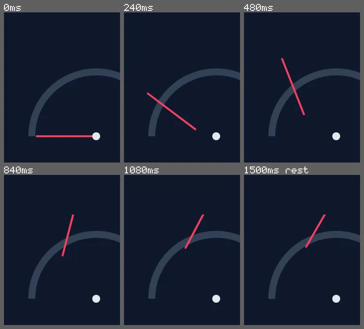

inspect motion --expect-origin
A gauge needle that turns about the wrong point
An SVG needle that should sweep 120° about the dial's centre, at (160, 170) in the SVG's viewBox. Its CSS says transform-origin: center, which looks right and is wrong on SVG.
Open the page under test · fixtures/motion-authoring/v2/mutants/gauge-origin.html
Run it
vlmkit inspect motion fixtures/motion-authoring/v2/mutants/gauge-origin.html --selector .needle --expect-origin 160,170 --frames {out}/f
vlmkit snapshot strip --manifest {out}/f/frames.json --max-frames 6 --columns 3 --crop 54,0,234,303 --out {out}/strip.png
What to look at
The point a turn keeps still is solved from the element's transform in every frame. On an SVG element center is the viewBox's centre, (160, 100), so the needle's base swings up off the hub. --expect-origin 160,170 says the point in the SVG's own units, as transform-origin takes it.
The fix
transform-origin: 160px 170px (measured from the viewBox's corner), or transform-box: fill-box with the origin on the needle's own box.
What vlmkit printed
vlmkit inspect motion fixtures/motion-authoring/v2/mutants/gauge-origin.html --selector .needle --expect-origin 160,170 --frames {out}/f · exit 1 — the command fails, as a gate in CI would
inspect motion: fixtures/motion-authoring/v2/mutants/gauge-origin.html — 11 frames over 0..1200ms + 1 at rest (<out>/f/frames.json)
target ".needle", begins at 0ms, runs 1200ms: travels 160px upwards (and 29px rightwards) over the frames measured, turns clockwise 120° (80°/s, a turn every 4500ms) (about 160,100 in its own units, outside its box), follows ease-out (it fits 4.2x better than the next-best curve, ease); follows ease-out in its turn exactly (measured: no other curve comes close)
frames (time, share of its on-screen part seen [op = opacity, on-screen = share of its box in the viewport, when partial], centre): 0ms 1.00 (180,250), 120ms 1.00 (160,226), 240ms 1.00 (150,200), 360ms 1.00 (148,174), 480ms 1.00 (153,150), 600ms 1.00 (162,130), 720ms 0.85 (175,115), 840ms 0.80 (187,104), 960ms 0.60 (198,98), 1080ms 0.60 (206,94), 1199ms 0.60 (209,93), 1500ms 0.60 (209,93)
FAIL origin-mismatch at 0ms: it turns about 160,100 in its own units (the SVG's user space), not 160,170: transform-origin on an SVG element is measured from the viewBox's corner (transform-box: view-box, the default), or from its own box with fill-box
1 fail; measured from the page, no model asked (--jev adds Jev's reading and the --forbid statements)
look at the frames: vlmkit snapshot strip --manifest <out>/f/frames.json --max-frames 6 --columns 3 --crop 54,0,234,303 --out <out>/f/strip.png
the first fail's own frame (0ms, .needle origin-mismatch): <out>/f/0000-t000000.png
report: <out>/f/motion-report.json
vlmkit snapshot strip --manifest {out}/f/frames.json --max-frames 6 --columns 3 --crop 54,0,234,303 --out {out}/strip.png · exit 0
Strip Frames: 6 (2 row(s) x 3 column(s)) Sheet: 734x664 png <out>/strip.png